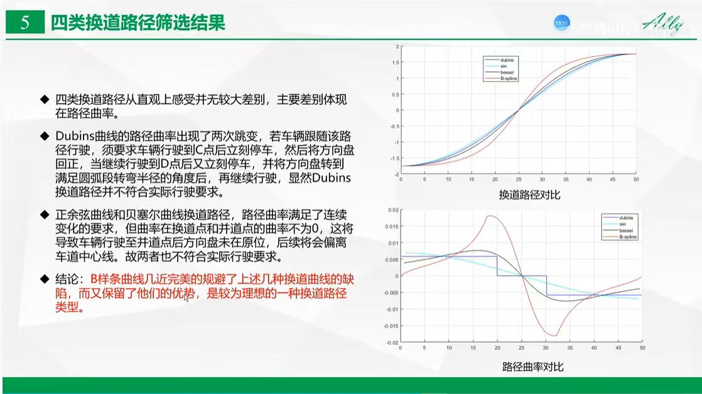
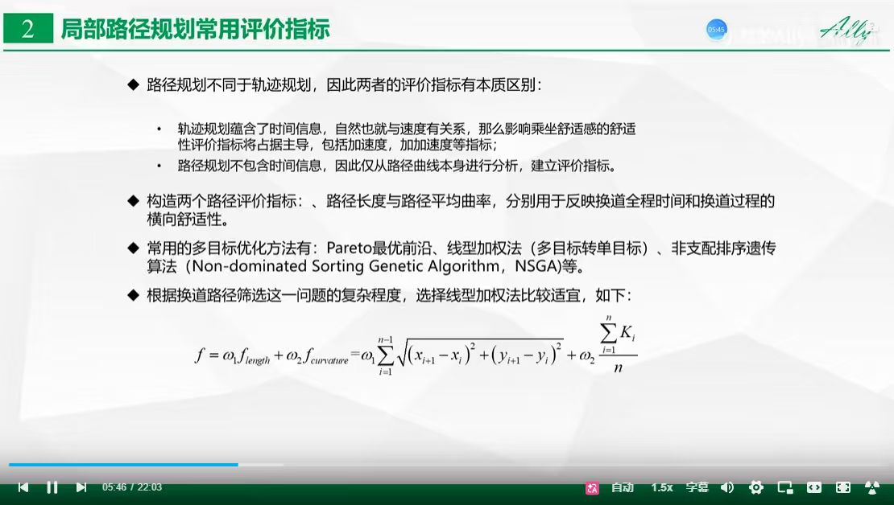
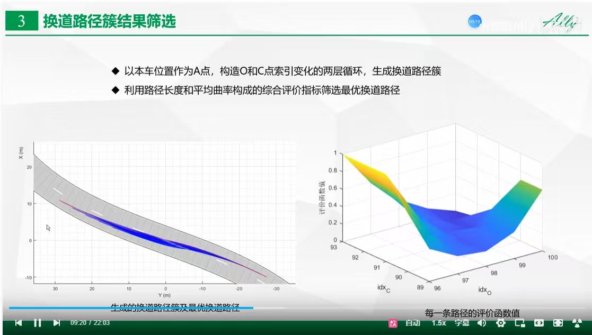
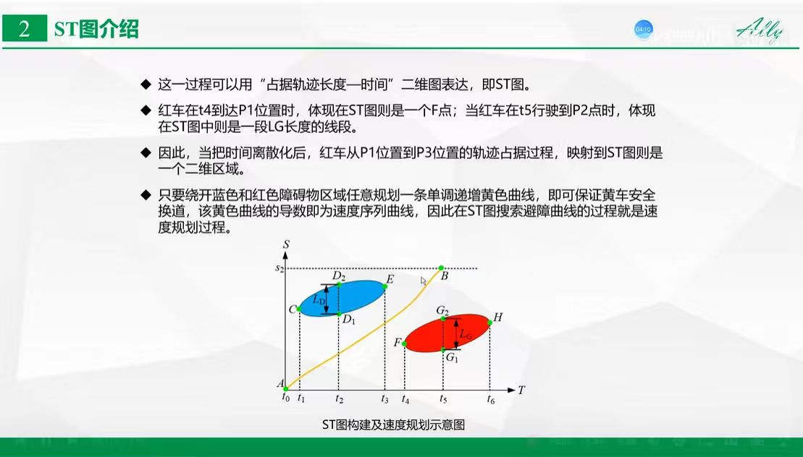
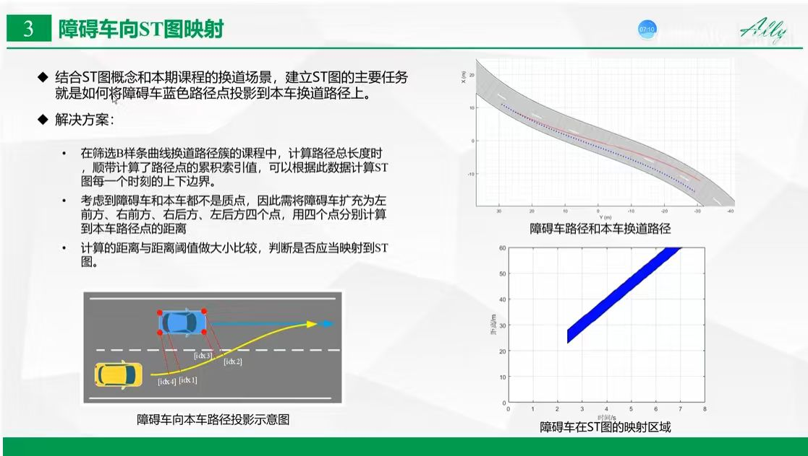
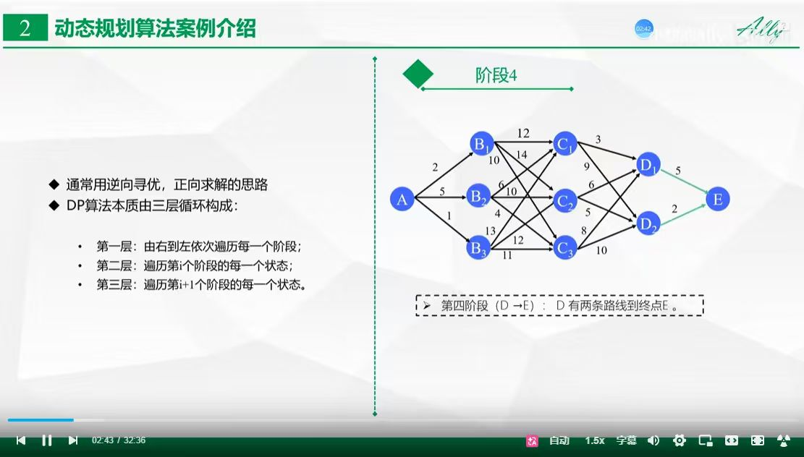
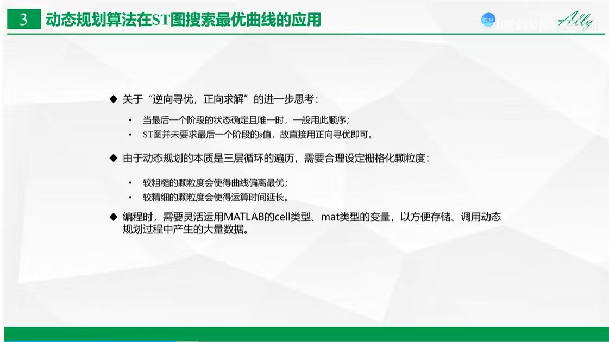
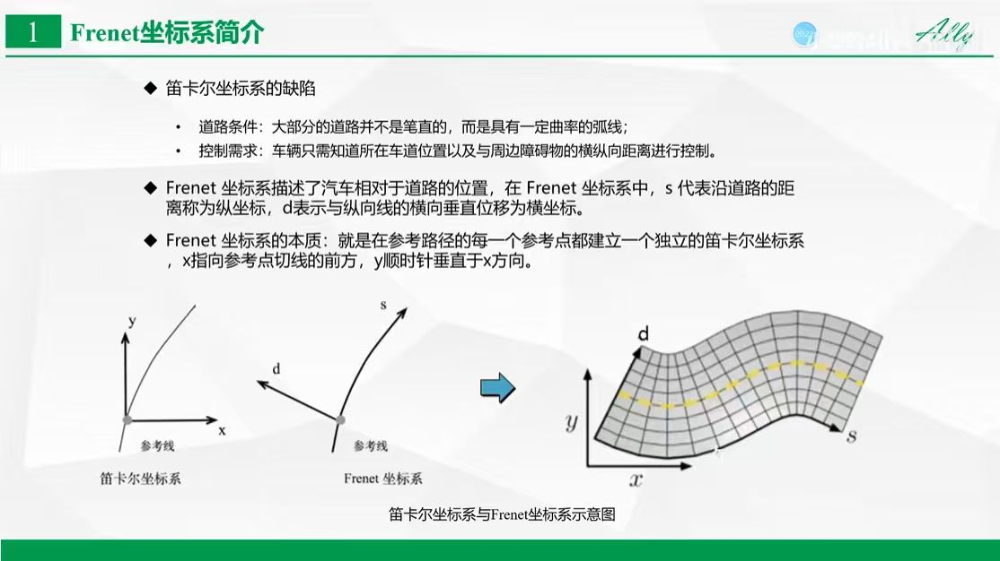
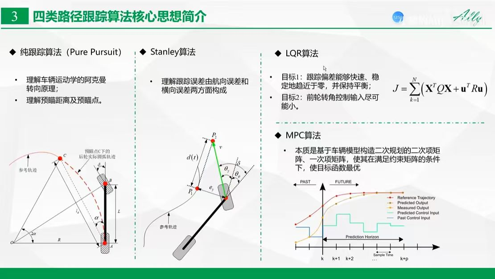
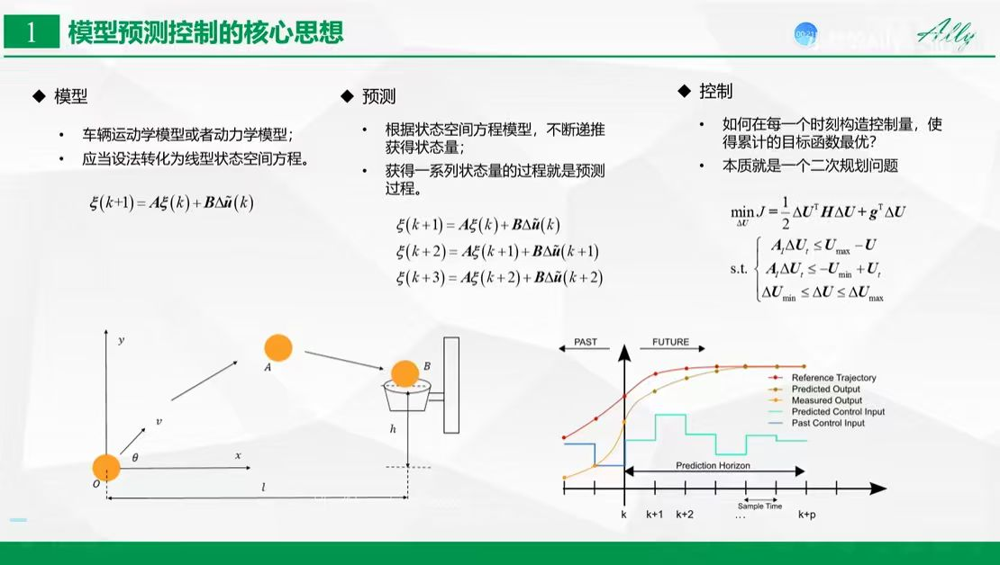

Slide 26: Lattice Planner 架构概览


此图详细对比了四类常用换道路径规划算法，并通过曲率分析筛选出最优方案。
Q: 为何 B 样条曲线 (B-Spline) 在四种换道路径筛选中脱颖而出？
A: 通过对比路径曲率 (Curvature)，各算法表现如下：
1. Dubins 曲线: 曲率出现两次“跳变”，需车辆中途停车并突变转向，不符合实际驾驶逻辑。
2. 正余弦 (Sin) 与贝塞尔 (Bezier) 曲线: 虽满足曲率连续要求，但起始/终止点曲率不为 0，导致换道后方向盘未回正，车辆会偏离车道中心。
3. B 样条曲线 (B-Spline): 完美规避了上述缺陷，同时保留了路径平滑与动力学可行的优势，是目前最为理想的换道路径规划类型。
此图展示了如何通过多目标评价函数 (Multi-objective Evaluation Function) 从换道路径簇中筛选最优解。
Q: 为什么要构建“路径簇”并使用“评价函数”进行筛选？
A: 自动驾驶在换道场景下，单一路径往往难以兼顾安全性、效率与舒适性：
1. 路径簇生成 (Path Cluster): 系统首先在目标区域生成多条满足动力学约束的候选 B 样条路径，形成路径簇。
2. 评价维度 (Multi-objective): 引入多目标评价函数进行加权筛选，包含：
- 碰撞风险 (Safety Cost): 与周边障碍物的安全距离。
- 平滑度 (Smoothness Cost): 路径曲率及其变化率，直接决定乘坐舒适度。
- 效率代价 (Efficiency Cost): 换道过程耗时与速度保持能力。
3. 最优决策: 通过评价函数计算所有候选路径的综合分值，选取加权得分最优者作为最终执行轨迹，确保车辆在复杂交通流中实现安全、高效且平滑的换道操作。

此图探讨了局部路径规划的评价指标体系，并给出了一种基于路径长度与曲率的线性加权评估模型。
Q: 局部路径规划评价与轨迹规划有何本质区别，且如何构建评价函数？
A: 两者核心区别在于对“时间”信息的依赖性：
1. 区别: 轨迹规划包含时间维度，需考察加速度、加加速度对舒适性的影响；局部路径规划仅关注几何本身。
2. 指标选择: 构建了“路径长度”与“路径平均曲率”两大核心指标，分别表征换道总耗时与换道过程中的横向舒适性。
3. 数学模型 (线性加权法):
$f = \omega_1 f_{length} + \omega_2 f_{curvature} = \omega_1 \sum_{i=1}^{n-1} \sqrt{(x_{i+1}-x_i)^2 + (y_{i+1}-y_i)^2} + \omega_2 \frac{\sum K_i}{n}$
该模型通过加权系数 ($\omega_1, \omega_2$) 调节路径长度与曲率的权重，实现多目标下的最优路径筛选。

此图详细展示了如何通过两层循环遍历生成路径簇，并利用 3D 评价曲面筛选最优换道轨迹。
Q: 3D 评价曲面如何辅助完成“最优路径筛选”？
A: 筛选过程通过对路径簇的量化评估实现：
1. 路径簇生成: 以当前车位为基准，通过构建 O 点与 C 点索引的“两层循环”，生成一系列换道轨迹集合。
2. 评价指标: 综合路径长度与平均曲率，计算每条候选路径的评价函数值。
3. 3D 评价曲面分析: 右图展示了以 `idx_o` 和 `idx_c` 为自变量的评价函数分布。深蓝色的“洼地”即代表评价函数值最小的区域。系统只需通过搜索该 3D 曲面上的全局极小值，即可对应锁定最优的 `idx_o` 与 `idx_c` 参数，进而唯一确定那条兼顾高效与舒适的最佳换道轨迹。
此图为自动驾驶专题课件标题页，探讨了如何综合规划路径与预测轨迹以构建 ST 图。
Q: 什么是 ST 图，其在自动驾驶规划中的核心作用是什么？
A: ST 图 (Space-Time Graph) 是连接路径规划与速度规划的桥梁：
1. 基本定义: 以行驶距离 (S) 为纵轴，时间 (T) 为横轴构建的二维空间，用于表达交通场景的时间-空间占用关系。
2. 构建要素:
- 静态路径: 将规划出的路径 (Path) 作为空间参考坐标轴。
- 预测轨迹: 将周围障碍物的预测轨迹 (Predicted Trajectory) 映射到该路径坐标轴上，转化为 ST 图中的“禁行区域” (Obstacle Block)。
3. 核心作用: 将复杂的 3D 动态避障问题简化为 2D 平面内的路径规划问题。车辆只需在 ST 图中避开障碍物禁行块，即可生成安全且符合时空约束的速度规划曲线，从而实现与交通流的动态协调。

此图详细展示了如何通过构建 ST 图 (空间-时间图)，将动态避障问题转化为速度规划的搜索过程。
Q: 为什么说“在 ST 图搜索避障曲线的过程就是速度规划过程”？
A: ST 图实现了时空维度的逻辑映射与简化：
1. 映射逻辑: 将交通参与者在不同时刻对本车路径的占用映射为 ST 图中的“禁行区域” (蓝色与红色障碍物区域)。
2. 空间定义: 纵轴 $S$ 为路径占用长度，横轴 $T$ 为时间轴。
3. 核心结论:
- 路径规划: 只要在 ST 图中避开禁行区域，规划出一条单调递增的“黄色曲线”，即可确保车辆避让障碍物安全换道。
- 速度规划: 黄色曲线的数学定义即为本车的位移-时间关系，对其求导即可得到本车的速度序列曲线。因此，在 ST 图中寻找符合时空安全约束的避障曲线，在本质上等同于生成车辆的速度序列，从而完成速度规划的任务。

此图详细阐述了将障碍车辆的轨迹从空间域映射至 ST 图中的技术方案。
Q: 如何实现障碍车辆轨迹向 ST 图的精确映射？
A: 映射过程需解决非质点障碍物的处理与投影计算问题：
1. 核心任务: 将障碍车 (蓝色) 的路径轨迹投影至本车 (黄色) 的换道路径上。
2. 技术方案:
- 四点法: 鉴于障碍车非质点，将其简化为左前、右前、左后、右后四个角点，分别计算它们距离本车路径的距离。
- 距离判定: 通过将这四个点投影到本车路径坐标系上，并与路径累积索引值进行对比。
- 阈值映射: 当计算出的距离小于预设安全阈值时，即认定该障碍物在特定时刻占用本车路径，从而在 ST 图中生成对应的蓝色“禁行块”。
3. 结果: 如右下角所示，障碍车在不同时刻的投影占用形成了 ST 图中一条倾斜的蓝色禁行带。

此图详细解析了动态规划 (DP) 算法在路径/速度规划中的标准实现流程与三层循环结构。
Q: DP 算法的三层循环结构及其求解逻辑是什么？
A: DP 算法遵循“逆向寻优，正向求解”的稳健决策思路：
1. 求解策略: 先从终点逆向推算至起点，记录每一阶段的最优子路径，实现全局最优寻优。
2. 三层循环结构:
- 第一层: 由右到左 (终点至起点) 依次遍历所有阶段。
- 第二层: 遍历第 $i$ 阶段的所有可行状态。
- 第三层: 遍历第 $i+1$ 阶段的所有状态，计算各转换代价并锁定最优子路径。
3. 工程价值: 该结构确保了算法在有限计算资源下，能从复杂的 ST 网格中高效检索出符合安全与平顺约束的最优速度序列，是自动驾驶决策规划算法的基石。

此图进一步探讨了动态规划算法在 ST 图搜索应用中的优化策略、颗粒度选择及编程实践。
Q: 动态规划在 ST 图搜索应用中需关注哪些工程细节？
A: 算法的实际落地需权衡精度与性能：
1. 搜索方向的选择: 虽然 DP 习惯使用“逆向寻优”，但在 ST 图场景下，由于最后一个阶段的 $S$ 值未确定，直接采用“正向寻优”更为直接有效。
2. 栅格化颗粒度 (Granularity) 的平衡:
- 粗颗粒度: 计算快，但会导致搜索到的路径偏离全局最优。
- 精细颗粒度: 结果更优，但代价是计算复杂度激增，导致运算时间大幅延长。
3. 数据结构工程化: 编程时应灵活运用 MATLAB 的 cell 类型或 mat 类型变量，以高效存储与调用大规模状态搜索过程中产生的海量中间数据。

此图详细解释了 Frenet 坐标系在自动驾驶路径规划中的必要性及其核心定义。
Q: 为什么要引入 Frenet 坐标系，它与笛卡尔坐标系有何本质不同？
A: 自动驾驶场景下，传统的笛卡尔坐标系存在明显局限：
1. 笛卡尔坐标系缺陷: 道路往往具有弯曲性，难以用简单的直角坐标描述；车辆控制需求往往是“车道位置”及“横纵向距离”，笛卡尔坐标系在处理此类轨迹规划时计算极其复杂。
2. Frenet 坐标系定义:
- s (纵坐标): 沿道路参考线的距离。
- d (横坐标): 与参考线的垂直偏移量。
3. 核心本质: Frenet 坐标系本质上是在参考路径的每一个点上建立局部笛卡尔坐标系。这种变换将弯曲道路“拉直”，极大地简化了车辆行驶轨迹的横纵向解耦计算，是路径规划算法中处理复杂道路环境的标准数学工具。

此图详细对比了自动驾驶控制层常用的四类主流轨迹跟踪算法：Pure Pursuit、Stanley、LQR 和 MPC。
Q: 简述这四类路径跟踪算法的核心思想及其适用场景？
A: 轨迹跟踪算法决定了车辆执行规划路径的精确度与平顺性：
1. Pure Pursuit (纯跟踪算法): 基于阿克曼转向几何与“预瞄点”逻辑，通过计算到达预瞄点的圆弧路径实现跟踪，原理直观，主要适用于低速场景。
2. Stanley 算法: 直接结合车辆前轴中心的“横向误差”与“航向误差”进行反馈控制，常用于车道保持 (LKA)，具备较好的跟踪收敛性。
3. LQR 算法 (线性二次型调节器): 引入二次代价函数 $J = \sum (X^T Q X + u^T R u)$，通过求解状态与输入权重的最优平衡，实现快速、稳定的偏差修正与控制输入最小化，是典型的线性最优控制方案。
4. MPC 算法 (模型预测控制): 本质是基于车辆模型，在“预测时域” (Prediction Horizon) 内构建并求解二次规划问题，不仅满足实时最优解，还能在预测时域内显式处理各种物理约束（如转向角/速度限制），是目前工业界处理复杂动态场景下的主流高性能控制方案。

此图精炼概括了模型预测控制 (MPC) 的三大核心模块：模型、预测与控制。
Q: 简述 MPC 实现“实时预测与最优控制”的三大核心逻辑？
A: MPC 通过将控制问题转化为实时数学优化，实现高性能控制：
1. 模型 (Model): 建立车辆的运动学或动力学模型，并线性化为状态空间方程 $\xi(k+1) = A\xi(k) + B\Delta\tilde{u}(k)$。
2. 预测 (Prediction): 基于模型，在“预测时域”内递推预测未来的车辆状态序列。这不仅是状态评估，更是构建优化问题的基础。
3. 控制 (Control): 将控制问题本质转化为二次规划 (QP) 问题：在满足执行器物理约束（如 $\Delta U_{min} \le \Delta U \le \Delta U_{max}$）的前提下，寻找最优的控制输入序列 $\Delta U$，使得累计目标函数 $J$ 最小化。MPC 的强大之处在于其能在时域内显式处理各种复杂物理约束，实现最优行驶轨迹的精准跟踪。
此图详细梳理了基于 Lattice Planner 的自动驾驶轨迹规划流水线，展示了从环境感知输入到最终轨迹输出的核心逻辑。
Q: 简述 Lattice Planner 的核心流水线架构及其数据流向？
A: 系统通过分层架构实现复杂动态环境下的轨迹解耦求解：
1. 坐标系转换 (Frenet): 将笛卡尔坐标系映射至 Frenet 坐标系 (S, L)，实现道路“拉直”，降低规划计算维度。
2. 障碍物处理 (ST/SL 映射): 将感知到的障碍物信息解析并投影至 ST/SL 空间，为后续碰撞检测提供时空基准。
3. 轨迹生成与校验:
- 生成: 基于运动约束与目标代价函数，分横向 (路径) 与纵向 (速度) 进行规划，随后通过代价评价体系进行融合。
- 校验: 核心环节，包括车辆运动学可行性校验与障碍物碰撞检测，确保输出轨迹既符合车辆动力学特性，又具备行驶安全性。